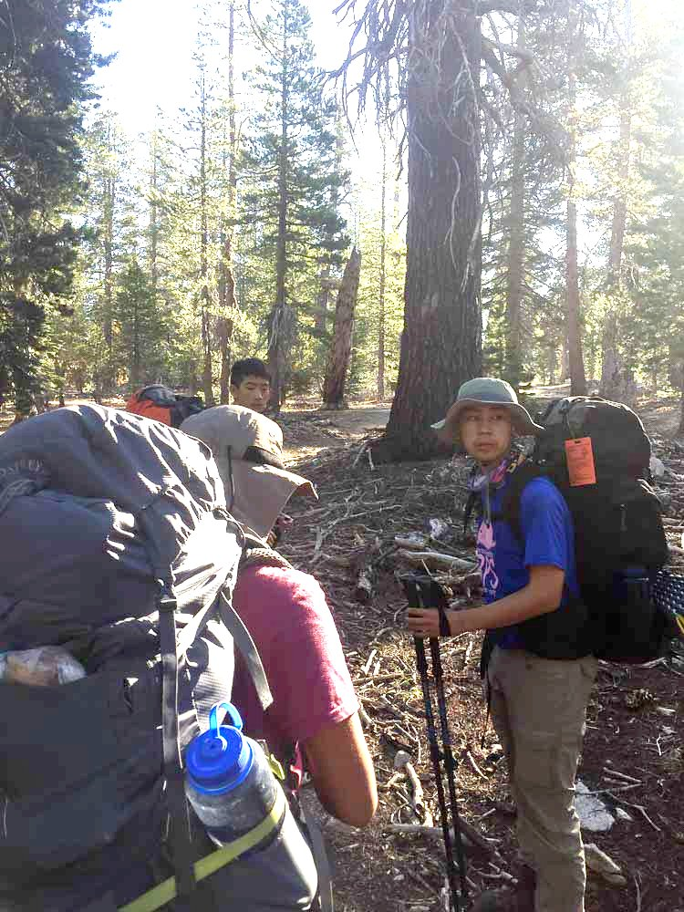
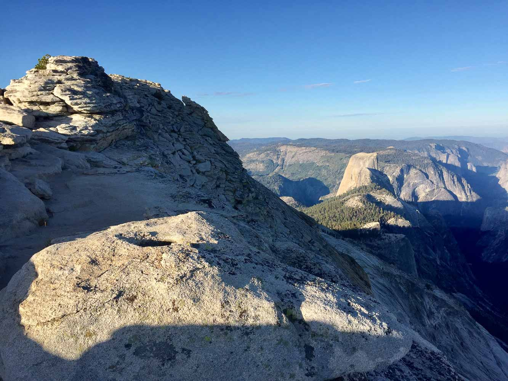
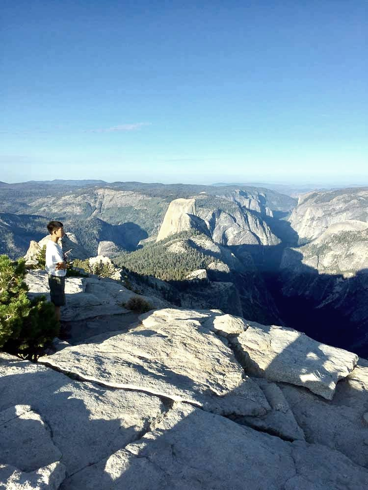
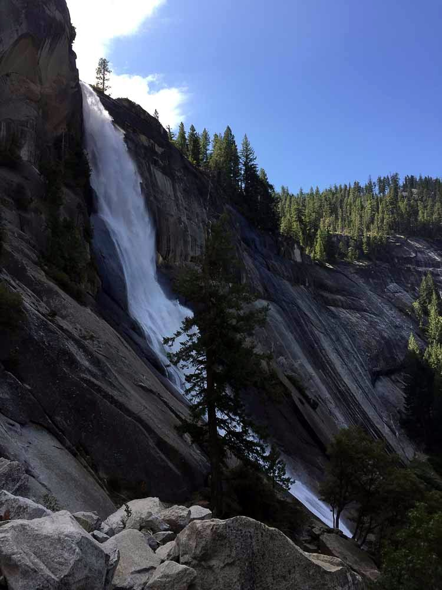

Labor Day Backpacking - Yosemite 2019
A trip with the guys! Participants: Joshua Yin (leader), Brandon Yuan, Jeffrey Meng, Daniel Chen, myself, Mr. Johnny Chen, and Mr. Davis Zheng. With Jeffrey, I planned the entire Labor Day Backpacking event, consisting of seven separate crews. But Joshua was the leader for this crew, and we had a great time!
Route: Caltopo
Day 0
We left at around 4 and drove to Yosemite, camping in the backpacker's campground.Day 1
Joshua went to go get the permits from the wilderness office (and the bear canisters). Turns out that I forget to tell him that I couldn't find my bear can, and we were one bear can short for the entire trip. Notably, we stored some food inside some Nalgenes because we just didn't have enough space. Reminds me of the sphere-packing problems.{kind=link}
so that was the smell last night....
We had a pretty relaxed start, since our mileage was going to be pretty short that day. We spent a long time waiting in the Mirror lake vicinity, because we didn't set a proper meeting location for Joshua to come find us after obtaining the permits. It all got sorted out in the end, though it took an hour or two.
{kind=link}
Jeffrey, Brandon, and I had already been up the Snow Creek trail at one point or another (them two years ago and myself the previous winter), so we knew what was coming. Tough climb for some of the less fit people!

{kind=link}
I took a poop around the footbridge area, and we also filled up water there.
{kind=link}
We camped about a couple hundred feet above the footbridge (lugging up water containers...) due to the camping closure near the footbridge.
{kind=link}
Group of teenagers attempt to solve the sphere-packing problem for n=7
Day 2
Day 2 was when the scenery began! That's the trend for all backpacking trips, isn't it...
{kind=link}
Anticipation runs high
{kind=link}
Did you get a good pic?
We made our way to Olmsted Point, where we were back in the touristy part of Yosemite, being right next to Tioga road.
{kind=link}
Olmsted Point
Past Olmsted Point, we hiked to Tenaya Lake, which was as gorgeous as ever. We took a very relaxing lunch break there.
{kind=link}
Tenaya Lake
After Tenaya Lake, we headed back into the wilderness, hiking up to Clouds Rest. We were planning to camp dry that night to make the third day shorter, but we struggled to find water sources. Eventually, we relied on some third party information (there were lots of day-hikers hiking back down to the road), and we figured out which creeks had water remaining. Sadly, we had to detour about half a mile to the west-most Sunrise Lake to get this information. The lake was pretty plain, but still pretty nonetheless.
At this point, we realized that our filtering was taking so long (one broken filter and another half-broken filter) that we needed to hurry a bit to make it to our desired campsite by nightfall.
{kind=link}
Bon Appetit! or apettite/apetite...
We made it, thankfully! It was a great campsite, with only a partially obstructed view of the Yosemite high country, particularly Mt. Clark.
Day 3
{kind=link}
{kind=link}
Anticipation runs higher
We didn't eat breakfast, and made a nice early morning start to bag Clouds Rest. Wow! It was great walking on that exposed trail on the knife ridge summit. Take a look at the pictures.

{kind=link}

{kind=link}
Daniel Chen ponders
{kind=link}
My favorite Mt. Clark!
{kind=link}
{kind=link}
Yosemite North

{kind=link}
Sip sip Brandon!
We ate breakfast on the summit, after which we descended some extremely steep and sand-slippery granite stairs. After that, it was just 6,000 feet of pure downhill, passing by some comfortable, familiar terrain from my previous trips. It was flying, but we were unbelievably sore in the days following. Descents just always have some way of killing you.
{kind=link}
those scary-ass stairs... man!
{kind=link}
can't get enough of this mountain
{kind=link}
We were flying!

{kind=link}
Nevada
{kind=link}
Vernal
Ready for the next one!